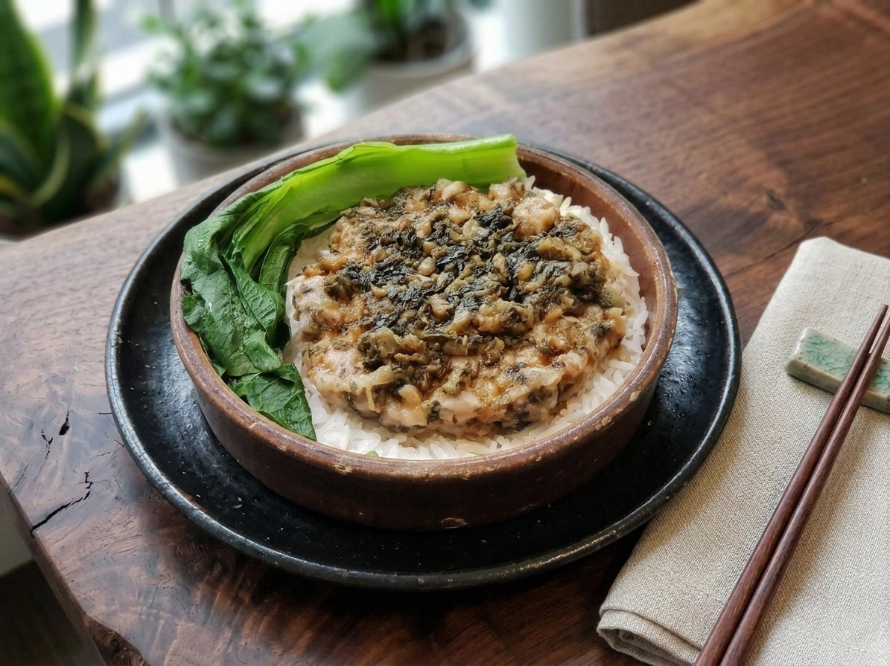
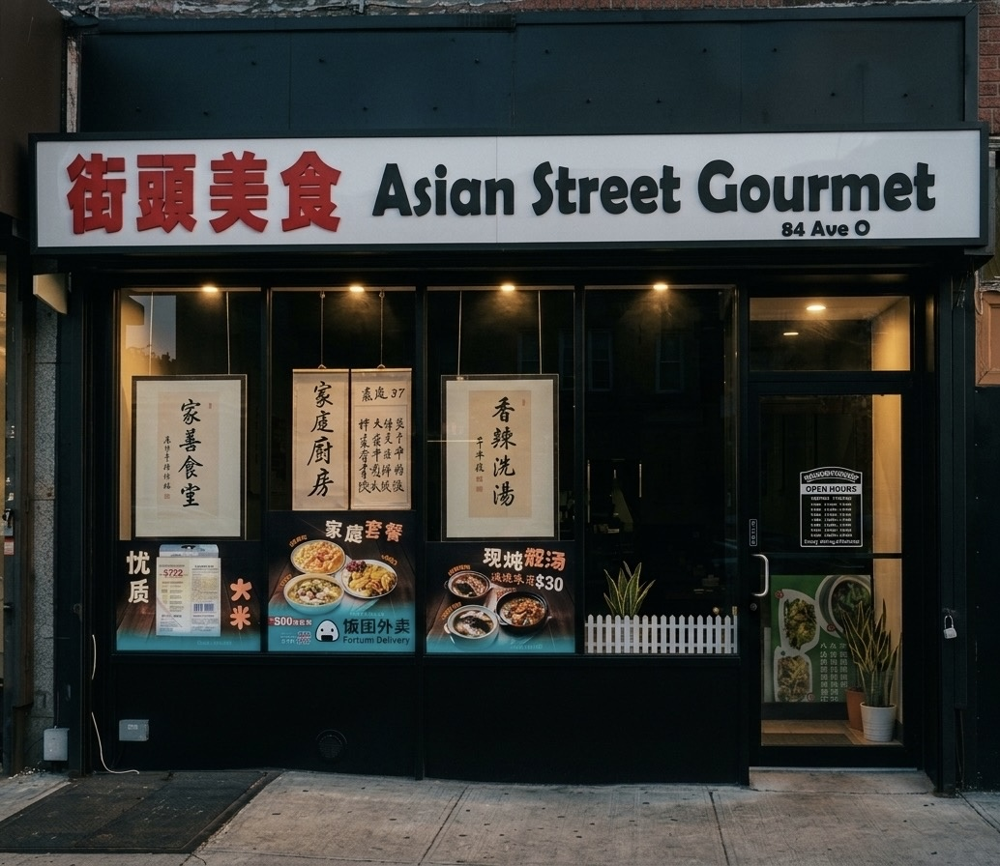

S · $7
蒸餸飯
Steamed Rice Plates
Slow-steamed rice with a topping. Comfort by the bowl.

亞洲街頭美食 · 家庭廚房
A neighborhood family kitchen in Brooklyn, plating $7 steamed rice plates, simmered soups, and the home-style dishes you grew up eating — or wish you had.

Find us here
84 Avenue O
亞洲街頭美食 · Brooklyn
家庭廚房
We don't claim to be fancy. We claim to be honest.
Asian Street Gourmet is a small Cantonese family kitchen on a quiet block of Avenue O. The recipes belong to our mother and her mother — steamed rice plates simmered over the same blue flame she used in Guangdong, soups that take all afternoon, fish-ball noodles ladled into paper bowls.
Order by code on the phone, the way it's always been done — "one S1, one C2, two D6" — and we'll have it ready when you arrive. Every plate is $7. Every soup is $3. Every plate is made the way home is.
— The family at 84 Avenue O
廚房一角


家庭廚房
Home Kitchen
84 Avenue O · Brooklyn

嚟搵我哋
Address · 地址
84 Avenue O
Brooklyn,
NY 11204
Open in MapsHours · 營業時間
Last orders 30 min before close
Order · 訂餐
Call
917 · 723 · 6262
How it works
Read off menu codes — for example: "one S1, one C2, two D6" — and we'll have it bagged for pickup.
Find us online
餓咗未？ · Hungry yet?